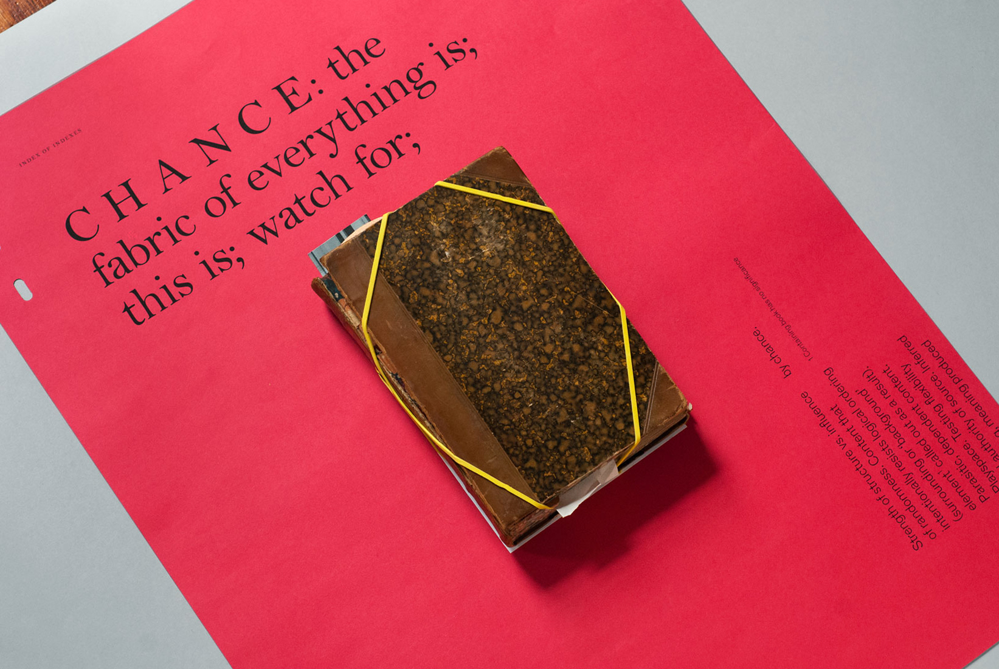
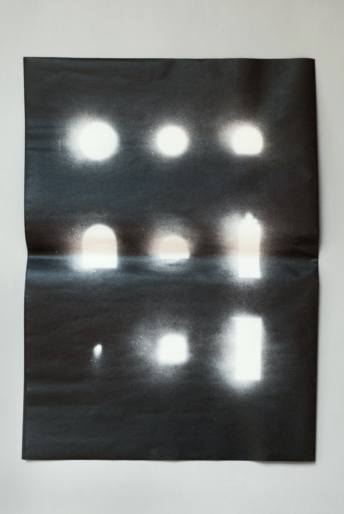
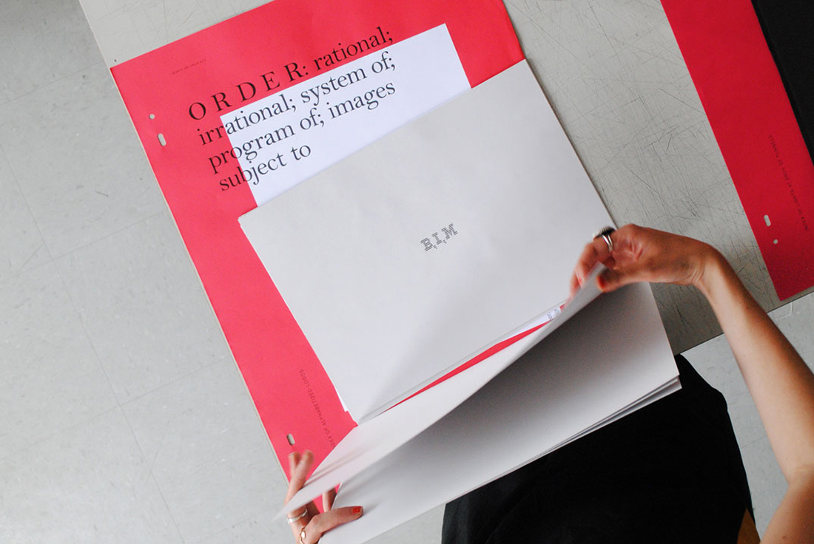
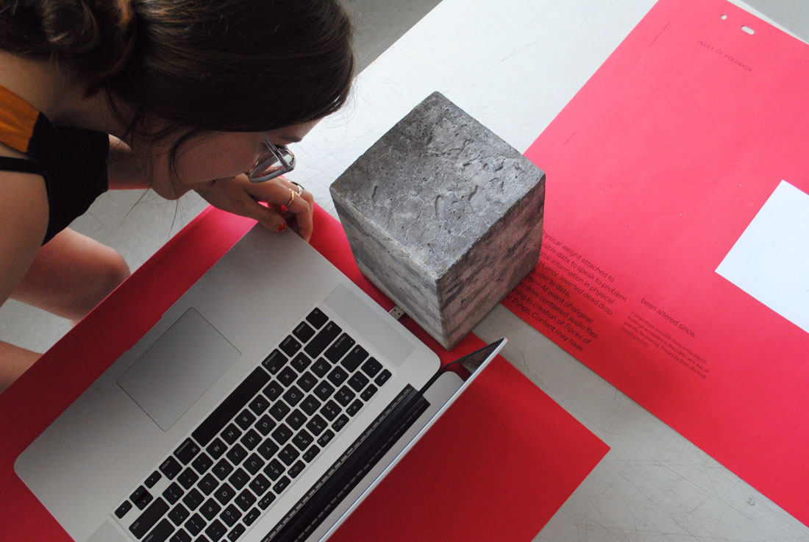
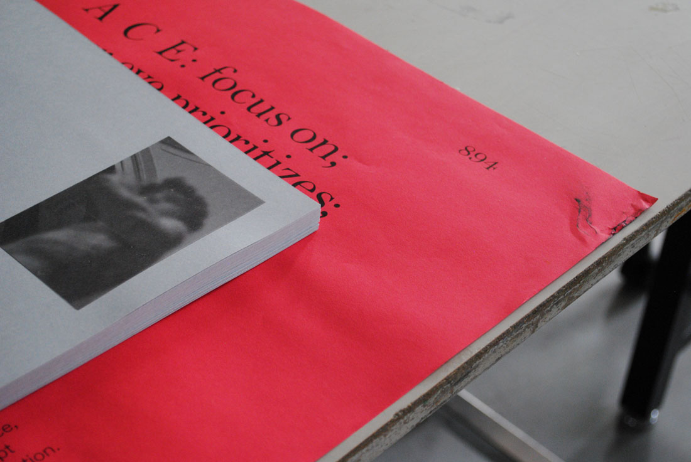
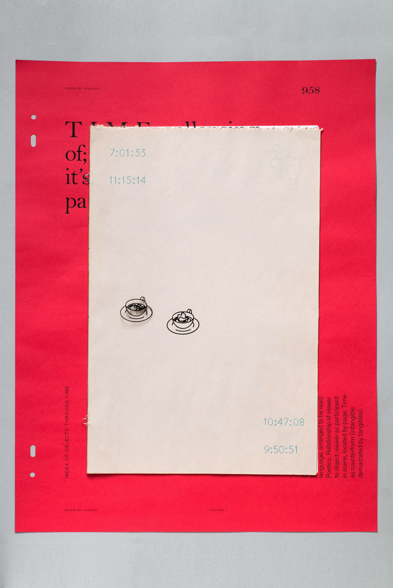
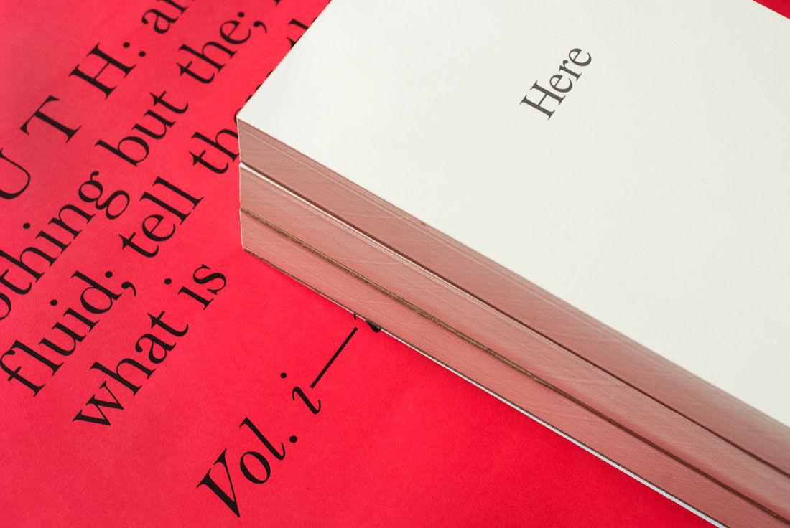
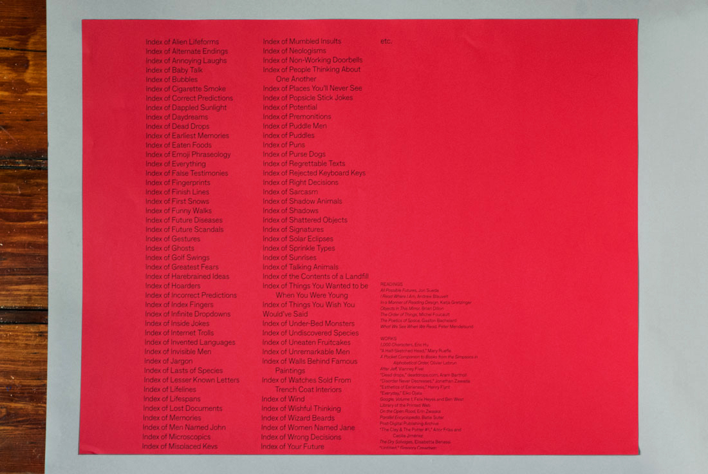

Dimensions Variable: RISD GD Triennial, Woods-Gerry Gallery, 2015
| Title | Type | Thumbnail |
|---|---|---|
| Full title | Design |  |
| Index of Non-Sequiturs | Design, illustration |  |
| Index of Lights at Ends of Tunnels | Design, illustration |  |
| Index of Alphabetized Logos | Design |  |
| Index of Feedback | Object |  |
| Index of Slowed Decay | Object | |
| Index of Counterform | Object |  |
| Index of Walls Behind David | Design |  |
| Index of Objects Through Time | Illustration, design |  |
| Index of Absolute Truths | Design |  |
| Takeaway | Writing, design |  |